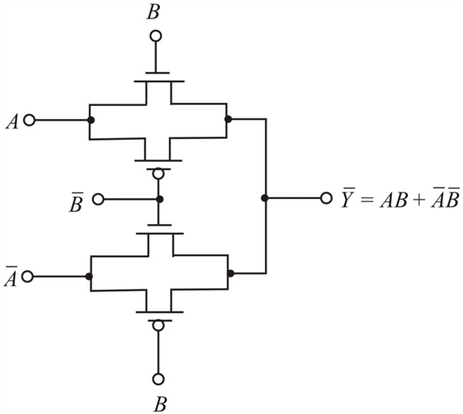
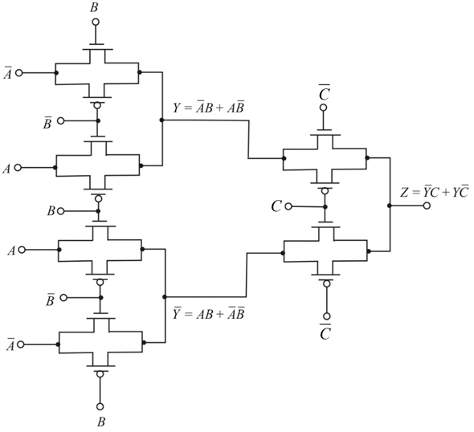

Refer to Figure 15.26 in the textbook.
(a)
The expression can be realized by the following circuit:

Figure 1
Thus, the expression for is realized with two transmission gates in Figure 1.
(b)
The expression can be realized by the following circuit:

Figure 2
In Figure 2, three transmission gates are used and a total of 12 transistors are used.
Thus, the expression for is realized with two transmission gates in Figure 1.